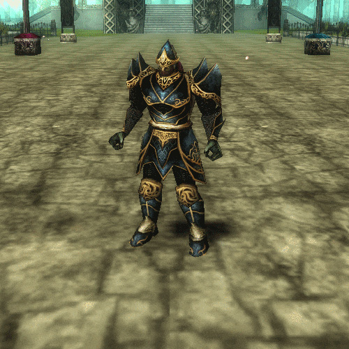

Rogue
Rogues are agile daredevils who specialize in delivering high octane burst damage from either close or long range.
They can choose to focus on being either dagger wielding Assassins or bow and arrow carrying Archers.
Role
Rogues excel at picking off targets. Their innate speed allows them to swiftly close the gap and their unparalleled burst damage makes them ideal to take out priority targets in mere seconds.
Attributes
With access to the fastest movement speed in the game, rogues can quickly overwhelm weaker players with their unrelenting offense and built-in survivability.
Assassins are swift threats that fight in melee range. Armed with a multitude of abilities with varying damage coefficients and stealth, they possess the highest burst damage spike in the game, mostly because of Critical Point, which allows them to deliver double damage on their skills.
Archers on the other hand, trade most of that burst away in exchange for sustained ranged damage. When compared to Assassins, Archers tend to have a more modest approach when it comes to sheer damage numbers, that is, until you take into account their point-blank melee damage, courtesy of Arrow Shower and Multiple Shot, which propels them to the number one spot in any DPS benchmark in Knight Online.
Both Assassins and Archers have access to a wide assortment of utility skills in the Search skill tree. This gives them an edge in both solo and party play over other classes, as well as their signature self-healing ability: Minor Healing.
Their main stat attribute is Dexterity and their secondary is Health.
Strategy
As an assassin, your goal in PvP is to follow target calls and eliminate them very quickly. You can also be used as a beacon so that allied warriors can use their teleport on you, for faster movement and practical target focus. If not in a meta party environment, you want to avoid big battles as much as possible, picking off weak links in the backline along with your occasional allies, or solo.
As an archer, your PvP role is much more limited. You have no position in a meta party because your damage is low / avoidable. Your only utility are RNG slows and stuns with perhaps a higher chance than usual to interrupt casts (namely, priest healing spells) so a player should focus on that if they do get in a meta melee party.
Inside an archer party environment however, you can just shoot with your archer buddies anything that moves for great reward with minimal risk.
Positioning is very important as an archer or assassin. You might have superior speed, but you will still go down as fast as any other class if caught in the wrong place.